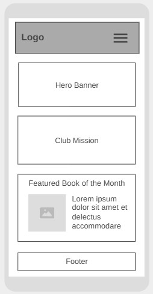
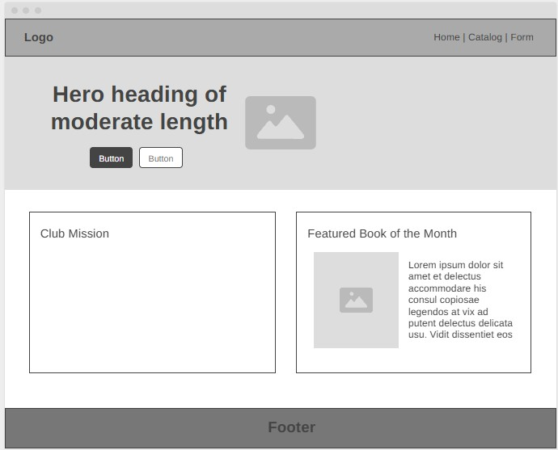

1. Site Name
Lima Literary Circle - This name represents an online community for book lovers in Lima to connect, share what they are reading, and exchange book recommendations.
Possible domain: limaliterarycircle.org
2. Site Purpose
This site provides a digital hub for readers featuring information about the club and the featured book of the month (Home), an interactive catalog of recommended books built with JavaScript (Catalog), and a form for members to submit their own literary suggestions (Form).
3. Scenarios
- What is the featured book of the month, and what is it about?
- What books do other members of the community recommend?
- How can I submit my own recommendation to be featured in the club?
4. Color Schema
Primary: #3e348b
Header, footer, and main headings
Accent: #f8b801
Buttons, borders, and highlight (with dark text)
Background: #f9f9f9
Page background and content cards
Text: #333333
Body paragraphs and general UI text
5. Typography
- Headings (Noto Sans): Used for main titles, section headings, and book titles.
- Body (Rubik): Used for paragraphs, navigation links, and general text.
6. Wireframes
Mobile view

Desktop view
